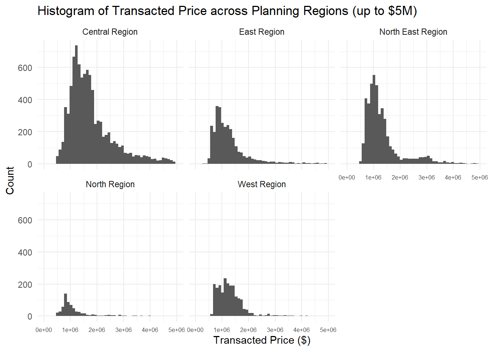
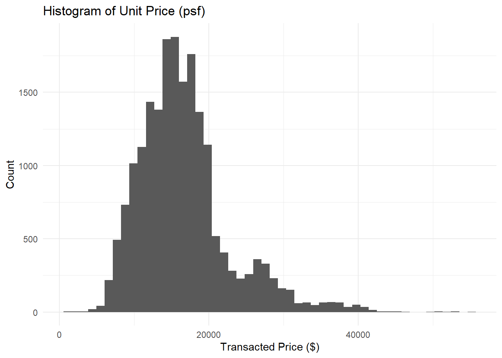
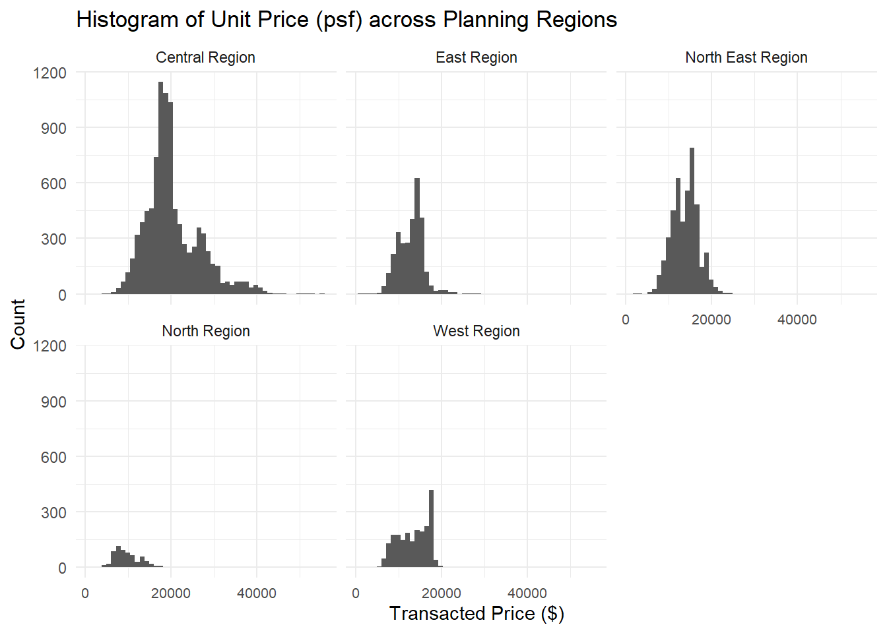
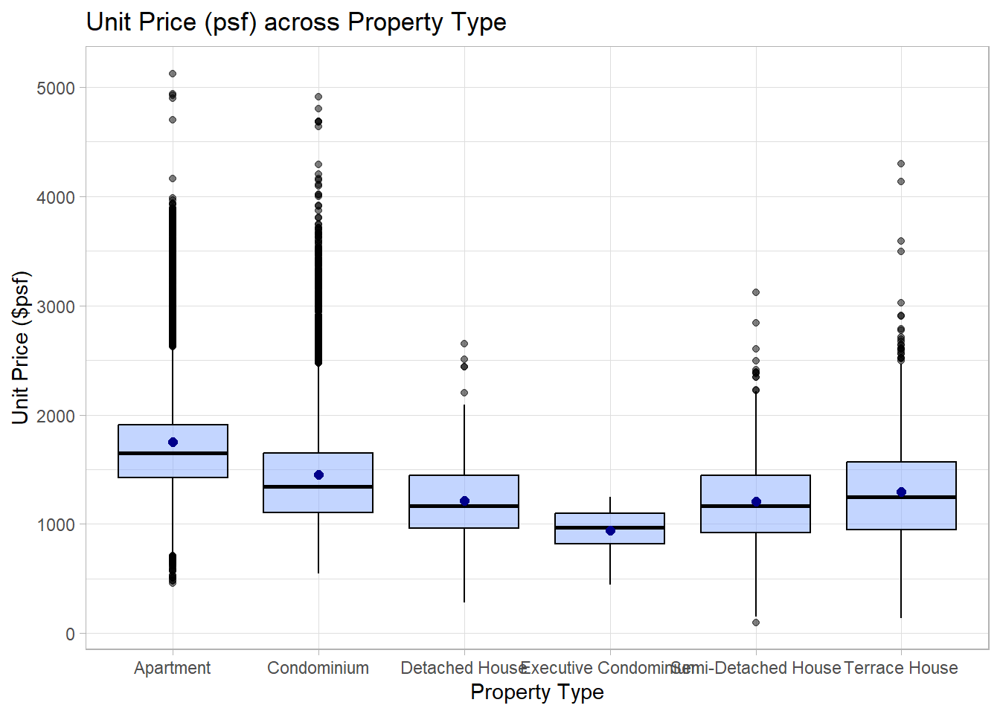
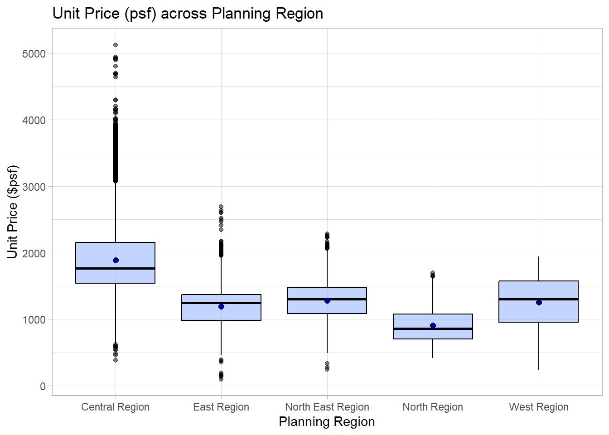

pacman::p_load(tidyverse)In Class Ex 01
In Class Ex 01
1.1 Loading the required packages
1.2 Loading the data
Rmb to use read_csv instead or read.csv
Using read_csv will retain the field names as per the csv file.
realis2019 <- read_csv("data/realis2019.csv")2.1 Some Visualisation
First - to take a look at the data:
head(realis2019)# A tibble: 6 × 20
`Project Name` Address `No. of Units` `Area (sqm)` `Type of Area`
<chr> <chr> <dbl> <dbl> <chr>
1 PEIRCE VIEW 557 Upper… 1 113 Strata
2 FLORIDA PARK 54 Sunris… 1 312 Land
3 BULLION PARK 164 Lento… 1 75 Strata
4 CASTLE GREEN 483 Yio C… 1 107 Strata
5 HAPPY ESTATE 36 Thomso… 1 687 Land
6 TEACHER'S HOUSING ESTATE 148 Tagor… 1 228 Land
# ℹ 15 more variables: `Transacted Price ($)` <dbl>, `Nett Price($)` <chr>,
# `Unit Price ($ psm)` <dbl>, `Unit Price ($ psf)` <dbl>, `Sale Date` <chr>,
# `Property Type` <chr>, Tenure <chr>, `Completion Date` <chr>,
# `Type of Sale` <chr>, `Purchaser Address Indicator` <chr>,
# `Postal District` <dbl>, `Postal Sector` <dbl>, `Postal Code` <dbl>,
# `Planning Region` <chr>, `Planning Area` <chr>colnames(realis2019) [1] "Project Name" "Address"
[3] "No. of Units" "Area (sqm)"
[5] "Type of Area" "Transacted Price ($)"
[7] "Nett Price($)" "Unit Price ($ psm)"
[9] "Unit Price ($ psf)" "Sale Date"
[11] "Property Type" "Tenure"
[13] "Completion Date" "Type of Sale"
[15] "Purchaser Address Indicator" "Postal District"
[17] "Postal Sector" "Postal Code"
[19] "Planning Region" "Planning Area" realis2019 <- realis2019 %>%
rename(
unit_psm = 'Unit Price ($ psm)',
unit_psf = 'Unit Price ($ psf)',
sale_date = 'Sale Date',
property_type = `Property Type`,
sale_type = `Type of Sale`,
planning_region = `Planning Region`,
planning_area = `Planning Area`,
trans_price = `Transacted Price ($)`
)Checking the transaction price across planning regions:
ggplot(data=realis2019,
aes(x= trans_price)) +
geom_histogram(bins=50) +
xlim (0, 5000000) +
facet_wrap(~ planning_region) +
labs(title="Histogram of Transacted Price across Planning Regions (up to $5M)", y="Count", x="Transacted Price ($)")+
theme_minimal() +
theme(axis.text.x = element_text(size = 6))
ggplot(data=realis2019,
aes(x= unit_psm)) +
geom_histogram(bins=50) +
labs(title="Histogram of Unit Price (psf)", y="Count", x="Transacted Price ($)") +
theme_minimal()
ggplot(data=realis2019,
aes(x= unit_psm)) +
geom_histogram(bins=50) +
facet_wrap(~ planning_region) +
labs(title="Histogram of Unit Price (psf) across Planning Regions", y="Count", x="Transacted Price ($)")+
theme_minimal() +
theme(axis.text.x = element_text(size = 8))
Taking a look at the unit price (psf) across property types:
ggplot(data=realis2019,
aes(y = unit_psf, x= property_type)) +
geom_boxplot(colour ="black", fill="#88abff", alpha=0.5) +
geom_point(stat="summary",
fun=mean,
colour ="darkblue",
size=2) +
theme_light() +
labs(title="Unit Price (psf) across Property Type", y="Unit Price ($psf)", x="Property Type")
and across planning regions:
ggplot(data=realis2019,
aes(y = unit_psf, x= planning_region)) +
geom_boxplot(colour ="black", fill="#88abff", alpha=0.5) +
geom_point(stat="summary",
fun=mean,
colour ="darkblue",
size=2) +
theme_light() +
labs(title="Unit Price (psf) across Planning Region", y="Unit Price ($psf)", x="Planning Region")